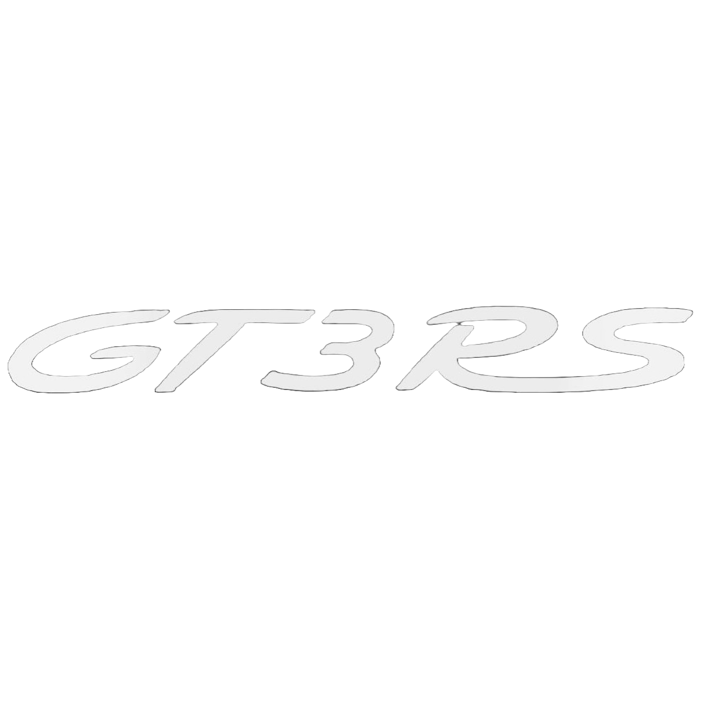
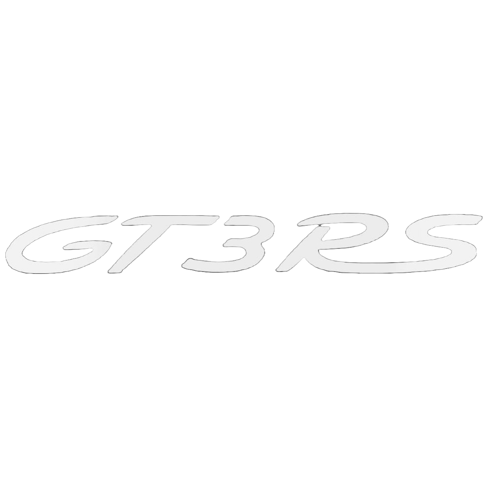
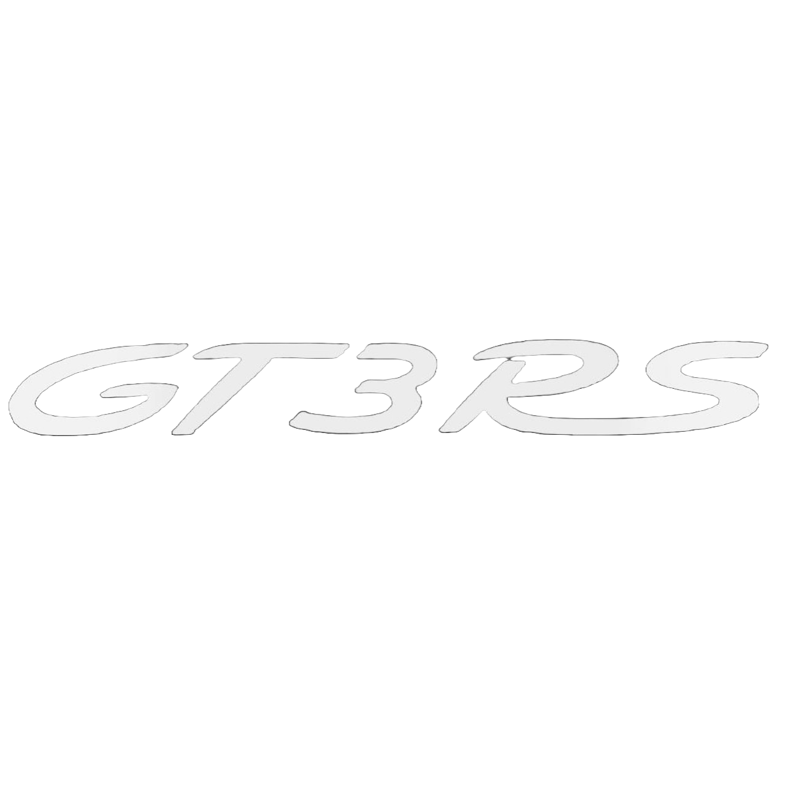
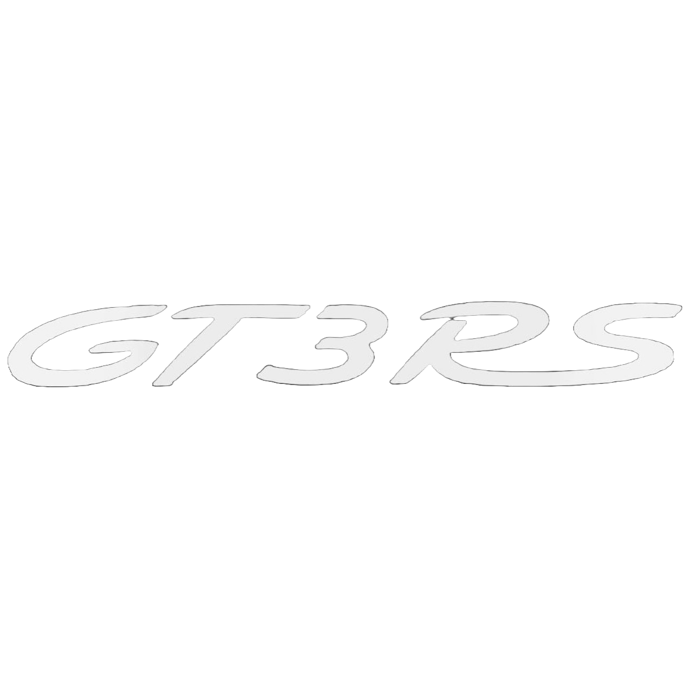

The Porsche 911 GT3 RS is an iconic sports car known for its performance-oriented features.
The porsche 911 was started to manufacture in 1964. 911 has been developed and improved over the years. Since its first model, the 911 has been continuously modified by the factory team or racing teams to be used in circuit races, rallies, and other racing events. Considering the total number of race victories, it is often described as one of the most successful race cars of all time. The first GT3 model of the Porsche 911 series was introduced in 1999 as part of the 996 generation. It was designed as a high-performance version, focused on track capability while still being road-legal. In 2003, Porsche introduced the Porsche 911 GT3 RS, an even more track-focused version of the 996 GT3.